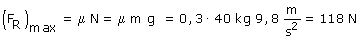

a) El camión se mueve horizontalmente hacia la derecha con aceleración. Si la caja no se mueve respecto al camión tendrá la misma aceleración que este: a. La fuerza de rozamiento entre caja y camión será indeterminada: FR Esta fuerza de rozamiento tiene que ser horizontal hacia la derecha (•)
Para que la caja no se mueva respecto al camión la
fuerza de rozamiento tendrá que valer 72 N  Hay fuerza de rozamiento suficiente para que la caja no se mueva respecto al camión, luego la hipótesis era cierta. La fuerza de rozamiento vale 72 N y tiene la misma dirección que el movimiento del camión
|